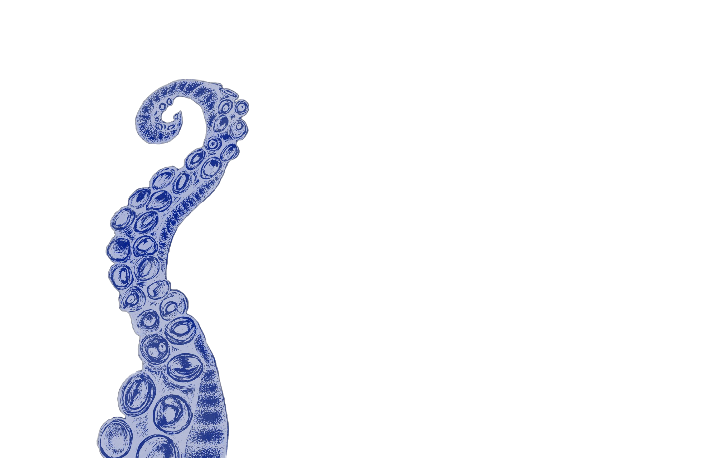
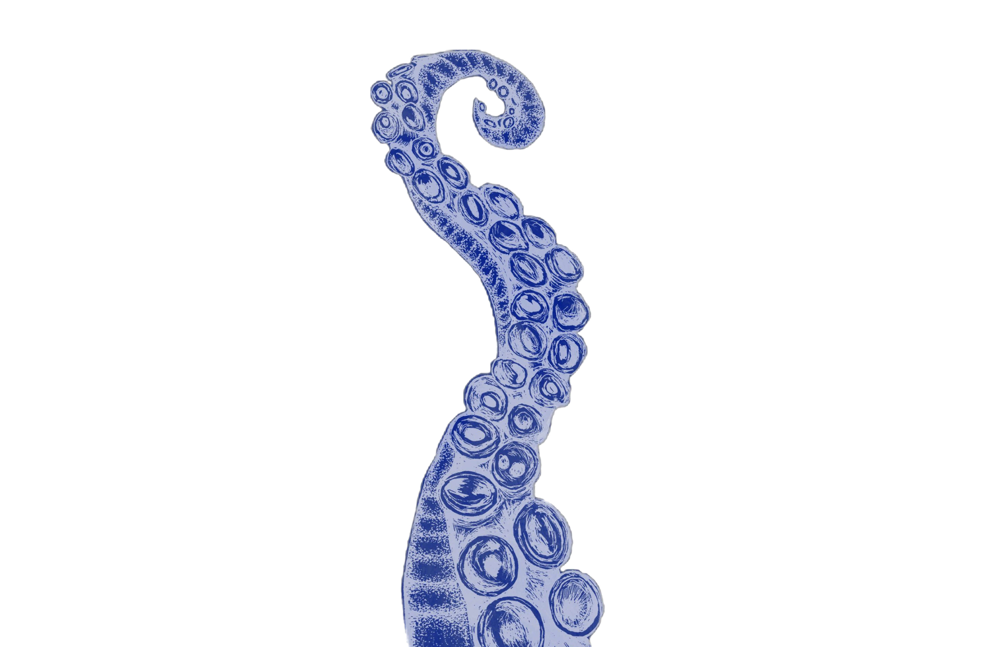

click around!
octopus garden fun facts!
A Beatles song off the Abbey Road album written by Ringo Starr. He wrote it when he was accidentally served squid on a boat rather than fish and chips, and the captain then explained to him how octopi collect stones and shiny objects to create their own gardens. With growing tensions between the Beatles, Ringo admits to just wanting to be under the sea.

